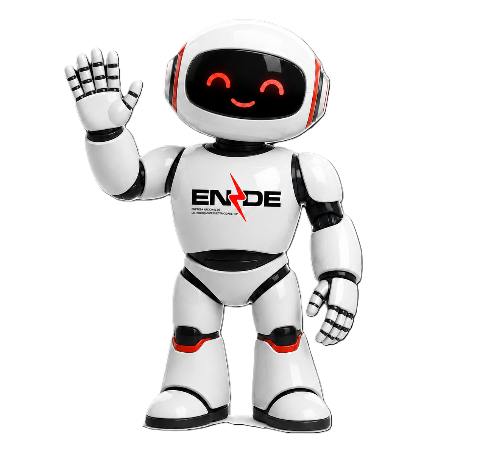
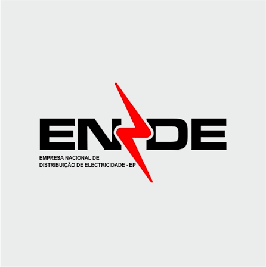
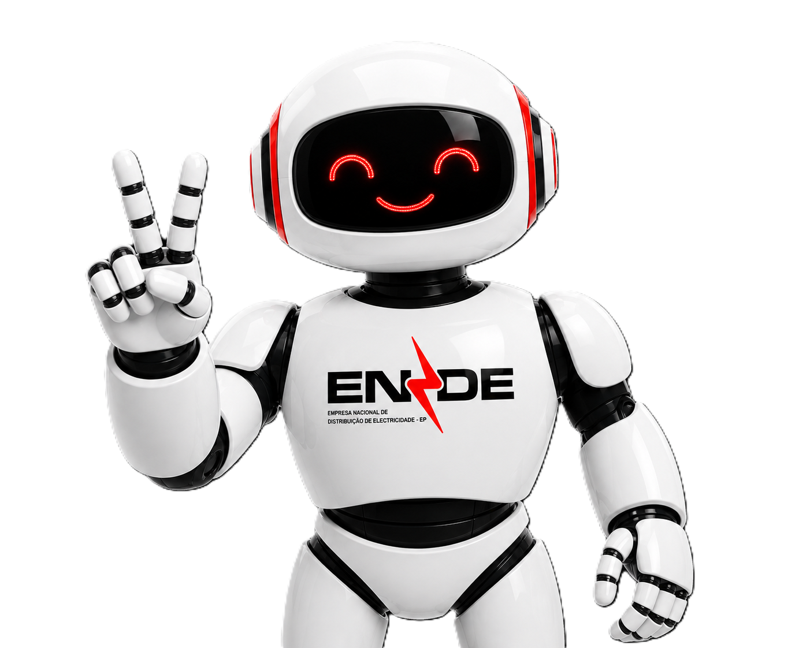

ENDE · Literacia Enérgetica
Primeiro escolha se é cliente Residencial ou Empresarial/Industrial. Depois seleccione a categoria adequada.
Adicione tudo o que está ligado à rede em sua casa
Toque em "Adicionar equipamento" para começar.
Quanto tempo por dia cada equipamento fica ligado
Volte ao Inventário e adicione pelo menos um equipamento.
Adicione equipamentos e defina as horas de uso.
Ainda não há tarifário oficial publicado para Grandes Clientes.
Taxa fixa 117 Kz × PC. Imposto de 14% incluído no custo diário e no custo mensal (mesma fórmula, só muda o consumo considerado). Valores de referência — confirme com a categoria real do cliente.
Gostou do simulador? Escaneie aqui para seguir a ENDE no Facebook e aprender mais dicas de poupança!
Os dados ficam guardados apenas neste dispositivo.

Sorria! Tire uma fotografia com o robô da ENDE para recordar a FILDA 2026.
Convertido automaticamente para 0 W — o valor de COP varia por marca/modelo, ajusta o campo "Potência (W)" abaixo se souberes o valor exacto.